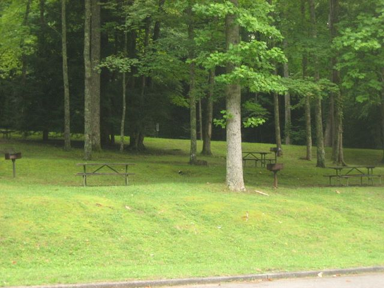

|
|
 |
| Cosby Entrance |
|
|
|
|
Cosby Description
Cosby is a wonderful, less visited area of the Smoky Mountains. If you want
to get away from the crowds and find a peaceful picnic area and campground
with great hiking trails and some of the best wildflower viewing in the
Smokies, then Cosby is the place to go. Located on the northeast corner of
park, Cosby is about 20 miles east of Gatlinburg. The large campground
never fills up, and no reservations are required, making Cosby the perfect
place to go when other areas are full. Cosby also has a large picnic
area which is rarely crowded. Several hiking trails start in Cosby, from
the easy Cosby nature walk to the difficult hike to the restored Mount
Cammerer fire tower.
|
|
Best times to visit
Cosby is one of the best places to view spring wildflowers. Peak months
for wildflowers in Cosby are March and April.
Cosby is one of the least busy areas in the park, making it a great
place to visit in peak tourist times such as during the leaf changing
season in mid to late October or weekends in the summer.
Cosby Weather

Best Hiking in Cosby
Cosby offers several wonderful hiking trails which tend not to be as
crowded as trails near some of the more popular areas in the park.
-
  The Cosby Nature Trail is an easy 1 mile walk on a shaded trail
that crosses several footbridges. The trailhead is located just past
the picnic area.
The Cosby Nature Trail is an easy 1 mile walk on a shaded trail
that crosses several footbridges. The trailhead is located just past
the picnic area.
-
The hike to Hen Wallow Falls on the Gabes Mountain trail is a
moderate, 4.4 mile roundtrip
hike to the falls. The trail passes through old growth forests
and also highlights many wildflowers in the spring.
The trailhead is located near the Cosby picnic area.
-
The Mount Cammerer Fire Tower provides one of the best views
in the Smokies. The hike to the tower is a difficult 11 mile round
trip on the Low Gap trail. The trailhead is located at the top of the
Cosby campground near the ampitheater.
Picnicing at Cosby

Cosby has a large picnic area with picnic tables and grills. There is plenty
of parking available. Since Cosby is not very busy, you will generally have
no trouble finding open picnic tables. Restrooms are available in the picnic
area and in the campground. A pavilion is available for large groups. The
pavilion can seat about 55 people and has 3 grills. The pavilion can be
reserved at the
www.recreation.gov.
Restrooms
 Restrooms with running water and flush toilets are available in the picnic
area and in the campground.
Restrooms with running water and flush toilets are available in the picnic
area and in the campground.
|